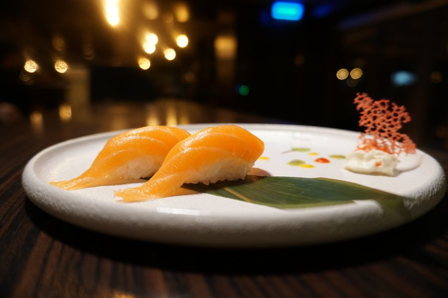
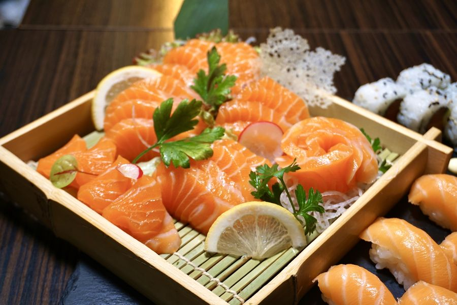
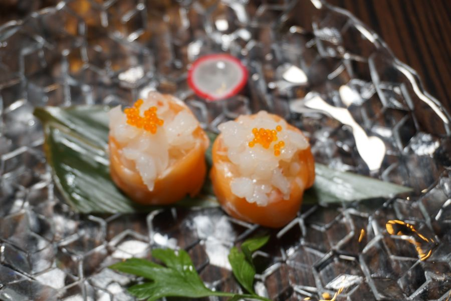

Vimercate · un banco di otto posti
Una portata
alla volta.
Niente musica, niente menù sul tavolo. Il pesce del giorno, il riso caldo, il tempo di guardarlo prima di mangiarlo.
↓
La carta
Quello che c’è
oggi.
Alla carta, oltre al percorso. Passa sopra a una voce per vederla.
Il silenzio
Meno cose,
fatte con più attenzione.
Il banco è di rovere non trattato. Le ceramiche sono di un laboratorio di Faenza, nessuna uguale all’altra. Il riso viene cotto ogni quaranta minuti e buttato se avanza. Sono le uniche regole.
8posti
12portate
40′il riso
0musica


Prenotare
Otto posti,
due turni.
19:00 e 21:15. Rispondiamo su WhatsApp entro un’ora. Piazzale Marconi 12, Vimercate · +39 392 416 6908